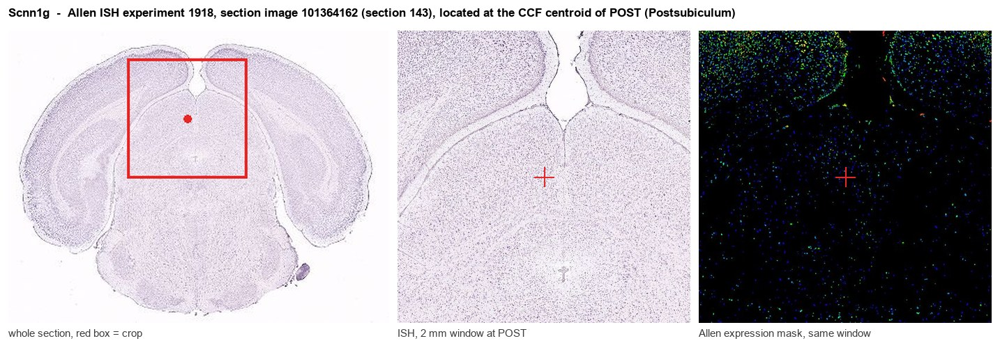
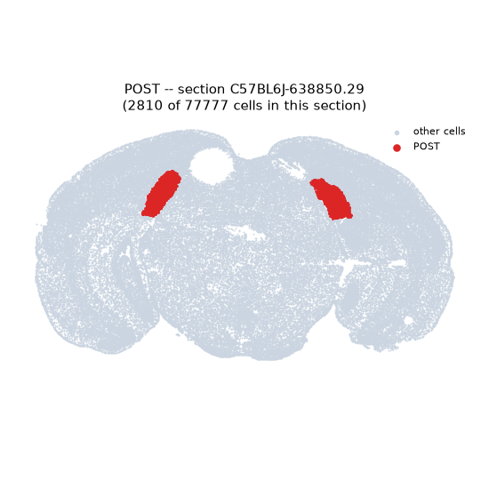
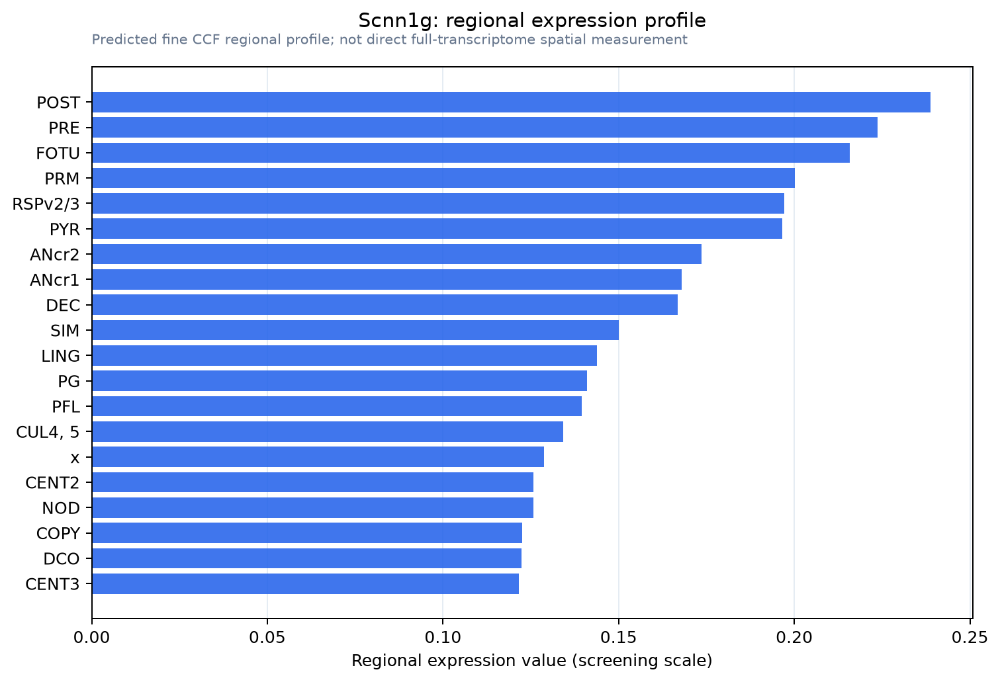

Scnn1g
Epithelial sodium channel subunit gamma (Epithelial Na(+) channel subunit gamma) (Gamma-ENaC) (Amiloride-sensitive sodium channel subunit gamma) (Gamma-NaCH) (Nonvoltage-gated sodium channel 1 subunit
Spatial tier: REGION_BIASED · Class: ION_CHANNEL · Top region: POST (Postsubiculum) · Positive regions: 29/554
Function in POST: evidence, prediction, innovation
- Gene function
- SCNN1G encodes the gamma subunit of the epithelial sodium channel (ENaC), a constitutively open, amiloride-sensitive, voltage-independent sodium channel assembled from alpha, beta and gamma subunits. In kidney and airway epithelium it mediates hormone-regulated sodium reabsorption; gain-of-function mutations cause Liddle syndrome. ENaC subunits also act as mechanosensitive and sodium-sensing elements in some non-epithelial cells.
- Region function
- The postsubiculum (dorsal presubiculum) is the principal cortical head-direction area: its neurons fire as a function of allocentric heading, receive anterodorsal thalamic and visual input, and anchor the head-direction signal to visual landmarks for navigation.
- Published in this region
- none No region-specific literature found. The closest related finding is that head-direction coding in postsubiculum depends on intrinsic conductances that set persistent firing and sleep-related sequences (Mehrotra 2024), while ENaC subunits themselves have only been characterised functionally in epithelia, vasculature and a few magnocellular/circumventricular neurons.
- Predicted function
- Prediction: a constitutively open sodium leak channel in postsubicular neurons would contribute standing depolarisation and thereby support the persistent, direction-tuned firing that head-direction cells must sustain for seconds at a time. Blocking it locally with amiloride/benzamil or deleting Scnn1g should hyperpolarise postsubicular neurons, lower baseline and peak head-direction firing rates and broaden directional tuning, predicting less stable heading and impaired landmark-anchored navigation, with little effect on place-cell fields downstream.
- Innovation
- ★★★★★ 5/5 A leak sodium channel as a substrate for persistent head-direction firing is a testable idea nobody has pursued in postsubiculum.
- Tools
- Amiloride and the more selective benzamil; Scnn1g floxed and Liddle-syndrome knock-in mouse lines; anti-gamma-ENaC antibodies; postsubicular targeting with standard stereotaxic AAV plus Camk2a-Cre or Vglut1-Cre.
- References
Direct evidence located at the region

Allen ISH experiment 1918, section image 101364162 (section 143): the section that contains the CCF centroid of Postsubiculum according to the Allen image-to-atlas alignment (reference_to_image), with a 2 mm window around that point. Left: whole section, red box = window. Middle: ISH signal. Right: Allen's expression-mask view of the same window. open this image in the Allen viewer
Direct spatial evidence

Regional expression figure

Predicted WMB × fine-CCF profile; not direct full-transcriptome spatial measurement.
Spatial profile
Evidence and specificity
- Evidence status
- PREDICTED_FINE
- Direct sources
- None; predicted localization only
- Exclusive threshold
- 12 positive regions out of 554
- Spatial specificity
- 0.351
- Top-region fraction
- 0.047
- Filter status
- PASS
Interpretation limits
- Cell-type-to-region projection is imputed expression, not direct spatial measurement.
- Adult reference atlases do not establish stability across age, sex, strain, state, or disease.
- Transcript abundance does not guarantee protein abundance or genetic-tool performance.